UDN
Search public documentation:
MeshPaintReferenceKR
English Translation
日本語訳
中国翻译
Interested in the Unreal Engine?
Visit the Unreal Technology site.
Looking for jobs and company info?
Check out the Epic games site.
Questions about support via UDN?
Contact the UDN Staff
日本語訳
中国翻译
Interested in the Unreal Engine?
Visit the Unreal Technology site.
Looking for jobs and company info?
Check out the Epic games site.
Questions about support via UDN?
Contact the UDN Staff
메시 페인트 참고서
문서 변경내역: Mike Fricker 작성. 홍성진 번역.
개요

간단한 안내
- 메시 페인트 툴을 띄우고 메시 액터를 선택하십시오.
- 메시에 할당된 머티리얼이 버텍스 컬러나 알파를 사용하는지 확인하십시오.
- 칠할 색상을 설정하고 그밖의 브러시 속성을 알맞게 조정하십시오.
- Ctrl 키를 누른 채로 메시를 클릭하여 끌면 페인트가 적용됩니다!
메시 페인트 모드
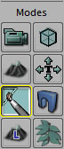
이 모드에 있는 동안에도 카메라의 이동이나 선택 등 대부분의 일반적인 에디터 기능을 사용할 수 있습니다. 또 퍼스펙티브(원근) 뷰포트가 실시간 모드 로 강제되는 것도 이 시스템이 필요로 하는 사항입니다.메시에 칠하기
 페인트 브러시는 커서 아래 메시상의 한 지점을 중심으로 하여 메시 지오메트리 표면 노멀을 따라 투영된 원통으로 생각해 볼 수 있습니다. 원형 브러시 윤곽선은 브러시의 반경을 나타냅니다. 내부 원은 브러시의 감쇠 (또는 내부 반경)를 나타냅니다. 이미 눈치채셨겠지만, 브러시 중앙에서 뻗어나오는 작은 선이 메시의 표면 노멀입니다.
칠하려면 Ctrl 키를 누른 상태로 메시의 표면 위를 클릭하고 드래그합니다. 지우려면 Shift 키도 같이 누르면 됩니다.
클릭할 때마다, 또는 마우스 위치가 (드래그로) 변경될 때마다 칠이 적용됩니다. 또한 브러시 플로우 가 켜져 있으면, 칠은 씬이 렌더될 때마다 적용됩니다.
페인트 브러시는 커서 아래 메시상의 한 지점을 중심으로 하여 메시 지오메트리 표면 노멀을 따라 투영된 원통으로 생각해 볼 수 있습니다. 원형 브러시 윤곽선은 브러시의 반경을 나타냅니다. 내부 원은 브러시의 감쇠 (또는 내부 반경)를 나타냅니다. 이미 눈치채셨겠지만, 브러시 중앙에서 뻗어나오는 작은 선이 메시의 표면 노멀입니다.
칠하려면 Ctrl 키를 누른 상태로 메시의 표면 위를 클릭하고 드래그합니다. 지우려면 Shift 키도 같이 누르면 됩니다.
클릭할 때마다, 또는 마우스 위치가 (드래그로) 변경될 때마다 칠이 적용됩니다. 또한 브러시 플로우 가 켜져 있으면, 칠은 씬이 렌더될 때마다 적용됩니다.
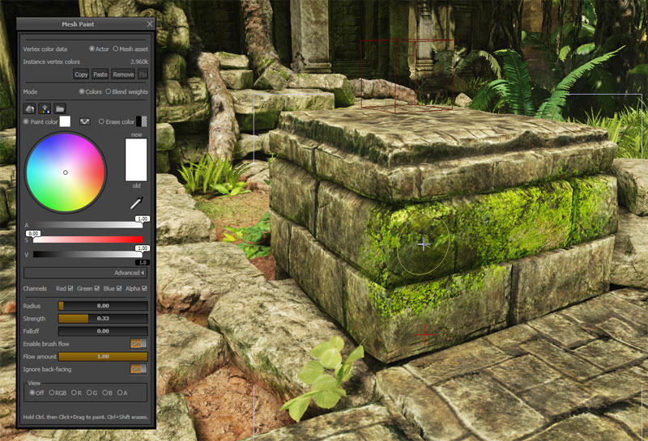
컬러 칠하기
디폴트 메시 페인트 모드는 (빨강, 초록, 파랑, 알파) 컬러 데이터를 직접 칠하는 것입니다. 색 칠하기나 지우기를 선택한 다음 브러시를 사용하여 메시에 적용하면 됩니다. 이 모드는 머티리얼 구성상 버텍스 컬러와 픽셀 셰이더를 재미난 방식으로 합치도록 되어있는 경우 좋습니다. 모드 가 컬러 로 되어 있을 때 사용할 수 있는 옵션은 다음과 같습니다: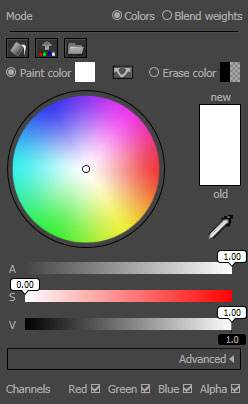
 | 채널 세팅을 따라서 색 칠하기 를 사용하여 칠하고 있는 메시나 인스턴스를 "채웁"(fill)니다. |
| 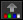 | 선택된 인스턴스에서 소스 메시 애셋으로 버텍스 컬러를 복사합니다. |
 | 선택된 인스턴스의 버텍스 컬러를 채우는 데 사용할 .TGA 이미지 파일을 임포트합니다. |
| 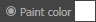 | 칠하기(Ctrl + 좌클릭 + 드래그)할 때 적용할 색입니다. 견본에 현재 색 미리보기가 표시됩니다. 툴에 내장된 색 선택기 로 색을 설정할 수 있습니다. |
| 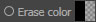 | 지우기(Ctrl + Shift + 좌클릭 + 드래그)할 때 "지우개"로 사용할 색입니다. 견본에 현재 색 미리보기가 표시됩니다. 툴에 내장된 색 선택기 로 색을 설정할 수 있습니다. |
| 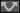 | 칠할 색 과 지울 색 을 맞바꿉니다. |
 | 페인트 브러시에 영향받을 색/알파 채널을 설정하는 체크 박스입니다. |
브러시 세팅
모든 툴 모드에 공통인 브러시 세팅에 대한 설명입니다. 참고로 슬라이더로 조절되는 옵션의 경우, 클릭하고 드래그하여 값을 빠르게 바꿀 수도 있고, 그냥 클릭한 다음 숫자를 직접 입력할 수도 있습니다.
| 세팅 | 설명 |
|---|---|
| 반경 | 언리얼 단위 브러시 반경입니다. 추가로 브러시에는 반경의 절반에 해당하는 깊이 기반 감쇠가 있습니다. |
| 세기 | 칠하기가 켜진 동안 클릭하거나 마우스 커서를 움직일 때마다 적용할 페인트 양을 설정합니다. 또한 브러시 플로우 가 켜진 경우, 브러시 세기의 (플로우 양) 비율이 표면에 적용됩니다. |
| 감쇠 | 브러시 세기가 거리에 따라 감쇠되는 방식을 설정합니다. 감쇠 값이 1.0 이면 브러시 중심은 100% 세기이며, 브러시 반경에 이를 때까지 선형으로 감소됩니다. 감쇠 값이 0.5 이면, 반경 절반에 이를 때까지는 100% 세기이며, 그 이후부터 선형 감쇠됩니다. 감쇠 값이 0.0 이면 전체 반경에 걸쳐 브러시 세기는 100% 입니다. 참고로 깊이 기반 감쇠 는 이 세팅과 무관하게 항상 활성 상태입니다. |
| 브러시 플로우 켜기 | 이 옵션은 커서를 움직이지 않을 때도 프레임이 렌더될 때마다 페인트를 적용하도록 만듭니다. 에어브러시와 비슷한 결과가 납니다. |
| 플로우 양 | 브러시 플로우 켜기 기능이 On 인 경우, 매 프레임 페인트를 적용할 때 브러시의 세기를 (세기 값의 일정 비율로) 설정합니다. |
| 뒷면 무시 | 켜면 카메라 반대쪽을 향하는 트라이앵글은 무시되어 페인트 브러시에 영향받지 않습니다. |
애셋 대 인스턴스
메시 페인트 툴로 실제 메시 소스 애셋에 칠할 수는 있지만, 레벨에 놓인 그 메시의 인스턴스에 칠하는 경우가 대부분입니다. 예를 들어 맵의 네 곳에 기둥 메시를 놓았다면, 각 인스턴스를 별도로 칠할 수 있습니다. 버텍스 컬러 데이터 옵션을 사용하여 메시 페인트 툴로 맵에 있는 액터 인스턴스를 수정할지, 실제 메시 소스 애셋을 수정할지 설정합니다.
| 옵션 | 설명 |
|---|---|
| 액터 | 레벨의 스태틱 메시 컴포넌트의 인스턴스에 저장되는 색 데이터를 칠합니다. |
| 메시 애셋 | 원본 메시 애셋에 저장되어 많은 레벨에 공유될 수 있는 색 데이터를 수정합니다. |
 여기에는 (맵 패키지에 저장되어) 버텍스 컬러 데이터에 의해 사용된 메모리 바이트 수 가 표시됩니다. 이 값에는 현재 선택된 모든 애셋에 대한 총합이 반영됩니다.
여기에는 (맵 패키지에 저장되어) 버텍스 컬러 데이터에 의해 사용된 메모리 바이트 수 가 표시됩니다. 이 값에는 현재 선택된 모든 애셋에 대한 총합이 반영됩니다.
| 명령 | 설명 |
|---|---|
| 복사하기 | 선택된 메시에 대한 인스턴스 버텍스 컬러 데이터를 복사합니다. 자세한 것은 인스턴스 컬러 데이터 공유하기 부분을 참고하십시오. |
| 붙여넣기 | 예전에 복사한 인스턴스 버텍스 컬러 데이터를 붙여넣습니다. 자세한 것은 인스턴스 컬러 데이터 공유하기 부분을 참고하십시오. |
| 제거 | 모든 선택된 메시에 대한 데이터를 버리고 디폴트 버텍스 컬러를 복원합니다. |
| 고치기 | 버텍스 수가 다른 리임포트된 메시에 저장된 인스턴스 데이터를 일치 시도합니다. 자세한 것은 버텍스 컬러 일치 부분을 참고하십시오. |
인스턴스 컬러 데이터 공유하기
메시를 칠한 다음 그 버텍스 컬러를 같은 레벨에 있는 메시의 다른 인스턴스와 공유하려는 경우가 있을 수 있습니다. 예를 들어 야외 맵에서 사용중이던 기둥 메시가 있었는데, 그 기둥의 밑둥을 녹색으로 칠하고 그 맵의 모든 인스턴스는 오직 그런 식으로만 나타나게 하려는 경우입니다. 인스턴스 버텍스 컬러 데이터는 메시 페인트 대화창 의 복사하기 와 붙여넣기 버튼을 사용하여 레벨의 인스턴스 사이에서 매우 쉽게 복사하고 붙여넣을 수 있습니다. 인스턴스 컬러 데이터를 복사하려면:- 복사할 컬러 데이터가 들어있는 인스턴스를 선택한 다음 복사하기 버튼을 누릅니다.
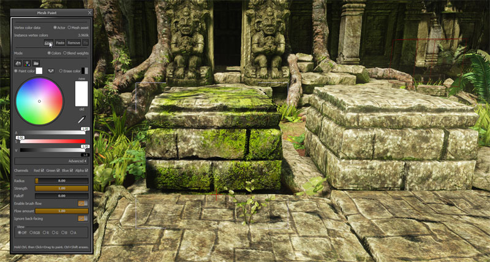
- 컬러 데이터를 복사할 인스턴스를 선택한 다음 붙여넣기 버튼을 누릅니다.

- 컬러 데이터가 모든 인스턴스에 적용됩니다.
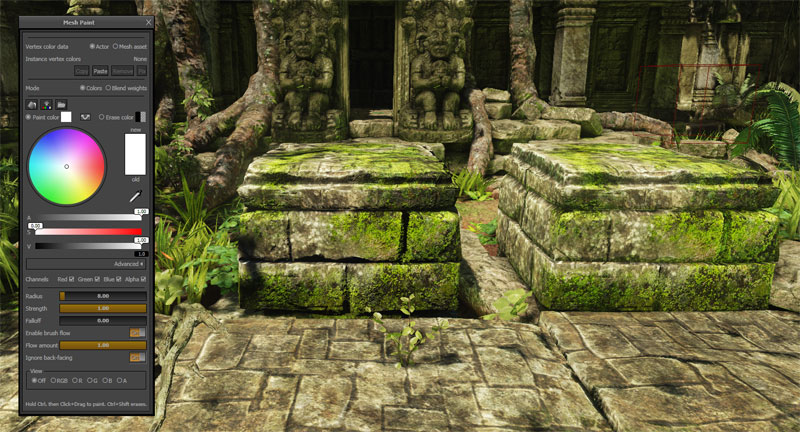
버텍스 컬러 일치
버텍스 수가 인스턴스의 버텍스 컬러 수와 다른 스태틱 메시를 리임포트할 때, 쿠킹 도중 맵 체크시 이런 에러가 납니다:StaticMeshActor_73 (LOD 0) 에 손수 칠한 버텍스 컬러가 있는데, 원본 스태틱 메시와 더이상 일치하지 않습니다.
 이 기능은 수정이 필요한 메시에서만 사용할 수 있으며, 수정이 필요 없으면 활성화되지 않습니다. 대부분의 경우, 특히나 약간만 조정하려는 경우에는 잘 돌아갑니다. 메시가 크게 변경될 수록 불일치 확률도 높아집니다. 이 기능은 변경이 극심한 경우에도 색을 항상 일치시키기 위해 고안된 것입니다. 이 툴을 자동으로 적용시키지 않은 이유는, 고치기 결과가 마음에 들지 않을 때 선택할 수 있는 기회를 주기 위해서입니다. 추가로 고치기를 적용한 이후 메시 페인트로 쉽게 마무리 작업을 해 줄 수도 있습니다.
원본 메시:
이 기능은 수정이 필요한 메시에서만 사용할 수 있으며, 수정이 필요 없으면 활성화되지 않습니다. 대부분의 경우, 특히나 약간만 조정하려는 경우에는 잘 돌아갑니다. 메시가 크게 변경될 수록 불일치 확률도 높아집니다. 이 기능은 변경이 극심한 경우에도 색을 항상 일치시키기 위해 고안된 것입니다. 이 툴을 자동으로 적용시키지 않은 이유는, 고치기 결과가 마음에 들지 않을 때 선택할 수 있는 기회를 주기 위해서입니다. 추가로 고치기를 적용한 이후 메시 페인트로 쉽게 마무리 작업을 해 줄 수도 있습니다.
원본 메시:
 고치기를 적용한 낮은 폴리 메시:
고치기를 적용한 낮은 폴리 메시:

컬러 vs 블렌드 웨이트
색을 직접 칠하는 대신, 툴을 텍스처 블렌드 웨이트 칠하기 모드로 바꿀 수 있습니다. 종종 둘 이상의 텍스처간의 혼합 요인(blend factor)으로써 버텍스 컬러 채널을 사용하도록 머티리얼 구성을 하는 경우가 있기에, 유용한 기능입니다. 여기서 메시 페인트 툴이 돕는 역할은, 칠할 때 자동으로 블렌드 웨이트를 정규화시켜 주는 것입니다. 단순히 텍스처 인덱스를 선택하고 칠을 시작하면, 툴이 알아서 색/알파 값을 올바르게 설정해 줍니다. 모드 를 블렌드 웨이트 로 설정했을 때 사용할 수 있는 옵션은 다음과 같습니다: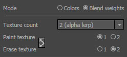
| 텍스처 카운트 | 메시와 관련된 머티리얼 내 블렌딩하려는 텍스처 수를 설정하여 블렌드 웨이트 "전략" 환경을 설정합니다. 이 옵션을 변경하면 텍스처 칠하기 와 텍스처 지우기 에 사용할 수 있는 옵션도 업데이트됩니다. 자세한 것은 블렌드 웨이트 머티리얼 셋업 부분을 참고하십시오. |
|---|---|
| 텍스처 칠하기 | 칠할 때 클릭하거나 마우스 커서를 움직일 때마다 적용할 텍스처 인덱스를 선택합니다. (Ctrl+좌클릭+드래그) |
| 텍스처 지우기 | 지울 때 텍스처 "지우개" 로 사용할 텍스처 인덱스 입니다. (Ctrl+Shift+좌클릭+드래그) |
뷰 모드
뷰 모드 콘트롤을 사용하여 퍼스펙티브 뷰포트에서 버텍스 컬러와 알파 값을 시각화시켜 볼 수 있습니다.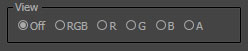
| Off | 디폴트 에디터 뷰 모드를 복원합니다. |
|---|---|
| RGB | RGB 버텍스 컬러만으로 언릿 스태틱 메시를 표시합니다. |
| R | 빨강 버텍스 컬러만으로 언릿 스태틱 메시를 표시합니다. |
| G | 초록 버텍스 컬러만으로 언릿 스태틱 메시를 표시합니다. |
| B | 파랑 버텍스 컬러만으로 언릿 스태틱 메시를 표시합니다. |
| A | 버텍스 알파만으로 언릿 스태틱 메시를 표시합니다. |
머티리얼 구성하기
EngineMaterials.upk 에 약간의 머티리얼 예제가 제공되어 있습니다. 콘텐츠 브라우저 에서 TexturePaint 나 VertexPaint 를 검색하여 이 내용을 확인할 수 있습니다.
머티리얼 에디터에서 두 디퓨즈 텍스처를 블렌딩하기 위해 버텍스 알파 값을 어떻게 사용했는지 그 예제는 이와 같습니다.

머티리얼 예제
이 예제는EngineMaterials.upk 에서 찾을 수 있는 VertexPaint_2Tex_Color 머티리얼 을 사용합니다. 세 가지 특수한 작업을 하는 예제 머티리얼입니다:
- 칠한 버텍스 컬러로 디퓨즈 컬러를 변조시킵니다. (RGB)
- 버텍스 알파 (A) 채널에 저장된 블렌드 웨이트를 사용하여 별도의 두 개 디퓨즈 텍스처(Diffuse, Diffuse2)를 블렌딩합니다.
- 버텍스 알파 (A) 채널에 저장된 블렌드 웨이트를 사용하여 별도의 두 개 노멀 텍스처(Normal, Normal2)를 블렌딩합니다.
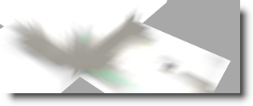
 다음 버텍스 알파(A)는 "블렌드 웨이트" 모드를 사용하여 칠합니다. 이 값은 디퓨즈/노멀 텍스처 쌍을 보간하는 데 사용됩니다. 이 스크린샷은 "알파만"(A) 보는 모드로 메시를 본 것입니다.
다음 버텍스 알파(A)는 "블렌드 웨이트" 모드를 사용하여 칠합니다. 이 값은 디퓨즈/노멀 텍스처 쌍을 보간하는 데 사용됩니다. 이 스크린샷은 "알파만"(A) 보는 모드로 메시를 본 것입니다.

 빛과 그림자를 완전히 먹인 최종 결과는 이렇습니다.
빛과 그림자를 완전히 먹인 최종 결과는 이렇습니다.